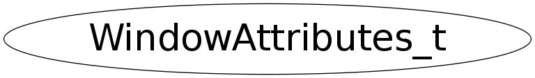

Function Members (Methods)
public:
| WindowAttributes_t() | |
| WindowAttributes_t(const WindowAttributes_t&) | |
| ~WindowAttributes_t() | |
| WindowAttributes_t& | operator=(const WindowAttributes_t&) |
Data Members
public:
| Long_t | fAllEventMasks | set of events all people have interest in |
| ULong_t | fBackingPixel | value to be used when restoring planes |
| ULong_t | fBackingPlanes | planes to be preserved if possible |
| Int_t | fBackingStore | kNotUseful, kWhenMapped, kAlways |
| Int_t | fBitGravity | one of bit gravity values |
| Int_t | fBorderWidth | border width of window |
| Int_t | fClass | kInputOutput, kInputOnly |
| Colormap_t | fColormap | color map to be associated with window |
| Int_t | fDepth | depth of window |
| Long_t | fDoNotPropagateMask | set of events that should not propagate |
| Int_t | fHeight | width and height of window |
| Bool_t | fMapInstalled | boolean, is color map currently installed |
| Int_t | fMapState | kIsUnmapped, kIsUnviewable, kIsViewable |
| Bool_t | fOverrideRedirect | boolean value for override-redirect |
| Window_t | fRoot | root of screen containing window |
| Bool_t | fSaveUnder | boolean, should bits under be saved? |
| void* | fScreen | back pointer to correct screen |
| void* | fVisual | the associated visual structure |
| Int_t | fWidth | |
| Int_t | fWinGravity | one of the window gravity values |
| Int_t | fX | |
| Int_t | fY | location of window |
| Long_t | fYourEventMask | my event mask |
Class Charts
{kind=link}
{kind=link}
{kind=link}
{kind=link}
